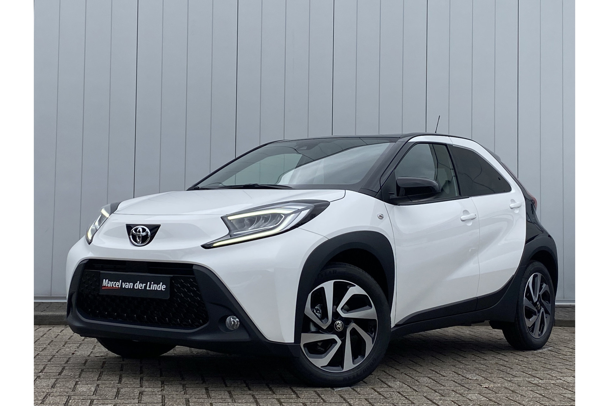
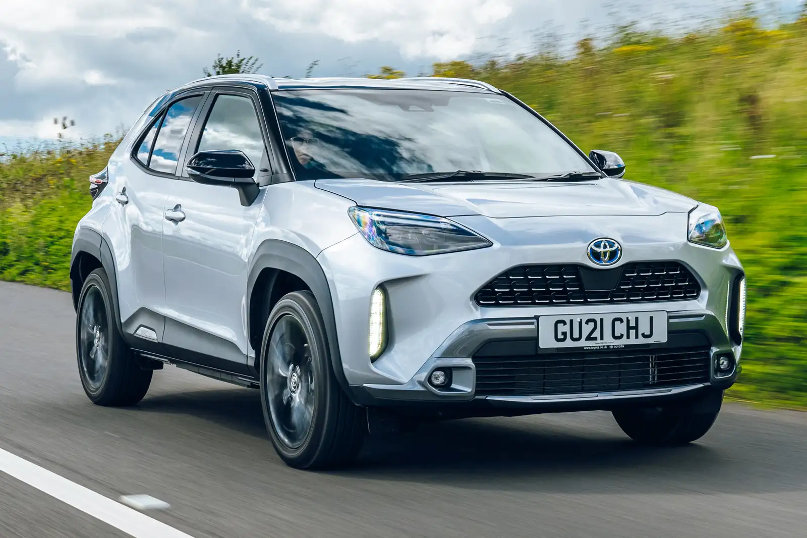
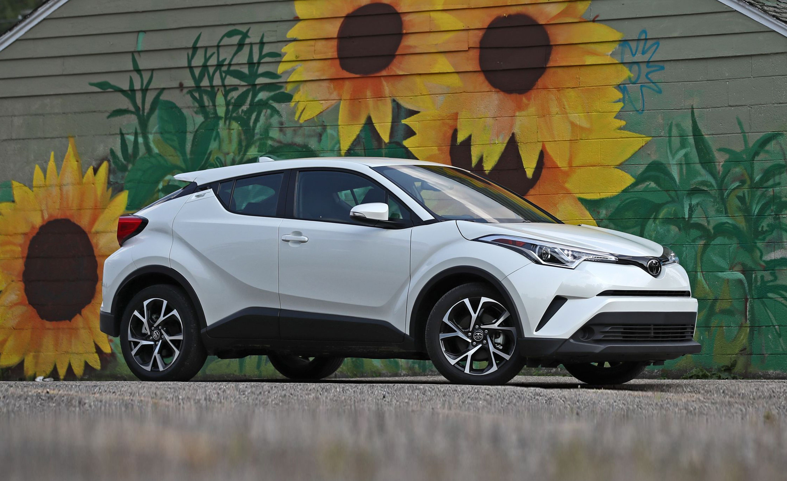
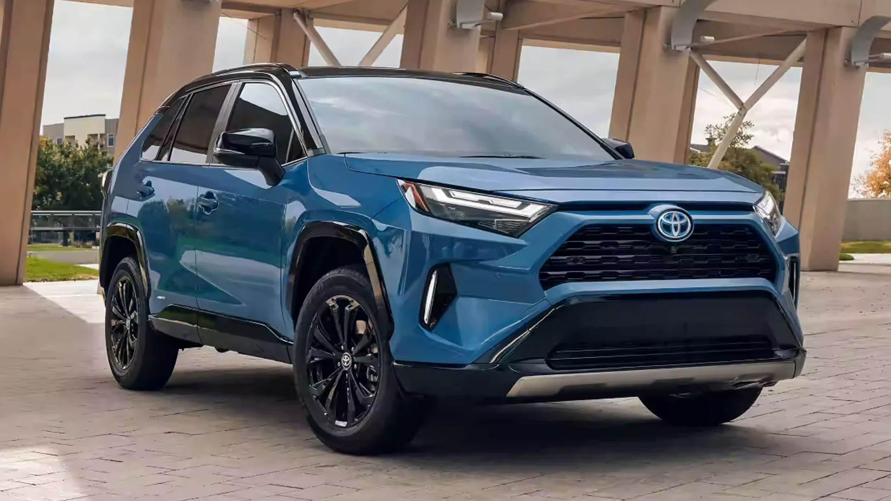
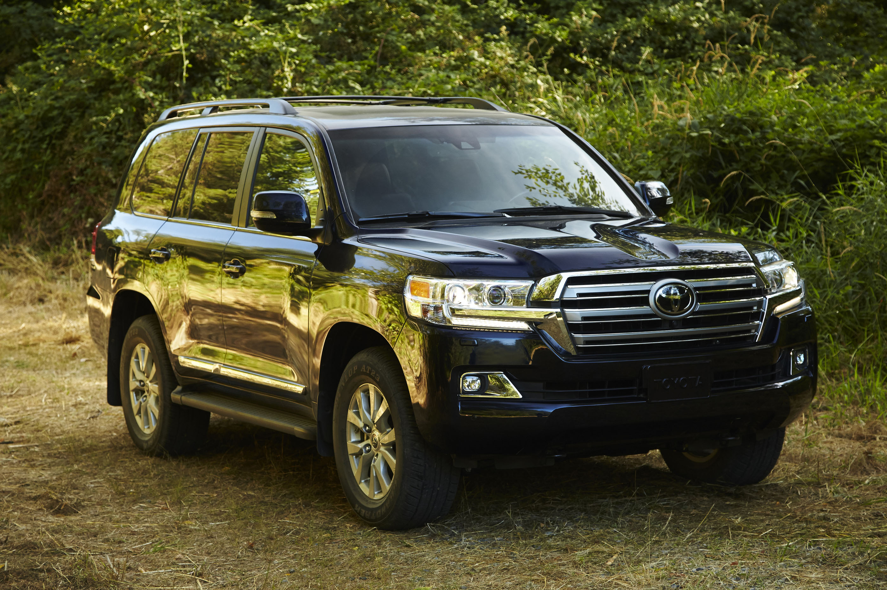

Moteur
1.0L 3 cylindres (essence)Puissance
72 chTransmission
Manuelle 5 vitesses ou CVTConsommation
4.7 L/100 kmVitesse de pointe
160 km/hVolume coffre
231 LDimensions
Longueur : 3 700 mmLargeur : 1 740 mm
Hauteur : 1 530 mm
Technologies
Caméra de reculSystème Toyota Safety Sense
Écran tactile de 7 pouces avec Apple CarPlay et Android Auto

Moteur
1.5L hybride (hybride)Puissance
116 chTransmission
CVTConsommation
4.5 L/100 kmVitesse de pointe
180 km/hVolume coffre
390 LDimensions
Longueur : 4 180 mmLargeur : 1 765 mm
Hauteur : 1 590 mm
Technologies
Toyota Safety Sense 2.0Caméra de recul
Écran tactile de 8 pouces avec Apple CarPlay et Android Auto

Moteur
1.8L hybride (hybride)2.0L hybride (hybride)
Puissance
122 ch (version 1.8L),184 ch (version 2.0L)
Transmission
CVTConsommation
Environ 7.0 L/100 kmVitesse de pointe
180 km/hVolume coffre
288 LDimensions
Longueur : 4 360 mmLargeur : 1 795 mm
Hauteur : 1 565 mm
Technologies
Toyota Safety Sense 2.0Caméra de recul et stationnement assisté
Écran tactile de 8 pouces avec Apple CarPlay et Android Auto

Moteur
2.5L hybride (hybride)2.5L essence (version standard)
Puissance
243 chTransmission
218 ch (version hybride),203 ch (version essence)
Consommation
5.0 L/100 km (version hybride)Volume coffre
580 LDimensions
Longueur : 4 600 mmLargeur : 1 855 mm
Hauteur : 1 690 mm
Technologies
Toyota Safety Sense 2.5+Système de surveillance de l'angle mort
Écran tactile de 8 pouces avec Apple CarPlay et Android Auto

Moteur
2.5L hybride (hybride)Puissance
243 chTransmission
CVTConsommation :
6.0 L/100 kmVolume coffre
453 L (avec 5 places)Dimensions
Longueur : 4 950 mmLargeur : 1 930 mm
Hauteur : 1 730 mm
Technologies
Toyota Safety Sense 2.5+Caméra de recul et stationnement assisté
Écran tactile de 8 pouces avec Apple CarPlay et Android Auto

Moteur
2.8L Diesel4.0L V6 (essence)
Puissance
204 ch (version Diesel),272 ch (version essence)
Transmission
Manuelle 6 vitessesAutomatique 6 vitesses
Consommation
8.0 L/100 km (version Diesel)Volume coffre
640 LDimensions
Longueur : 4 830 mmLargeur : 1 980 mm
Hauteur : 1 880 mm
Technologies
Toyota Safety Sense 2.0Système de traction intégrale
Écran tactile de 9 pouces avec Apple CarPlay et Android Auto